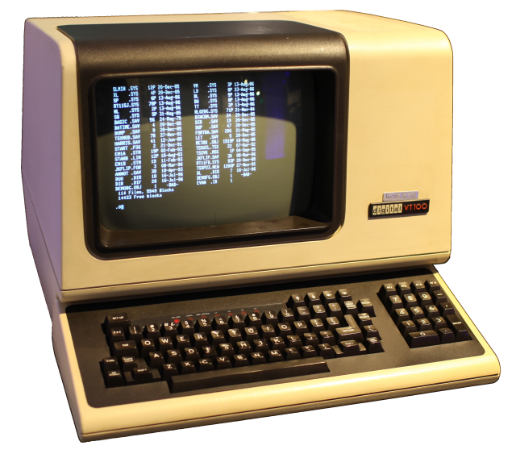

10/20/20 08:00:44 ¶ ● ⬀ ⬈ oldguydoesstuff:The classic VT100 from Digital Equipment Corp. After years of standing in line at the computer room at school to get a terminal, it was amazing to show up at my first day of work at DEC and find one of my very own waiting for me in my office.